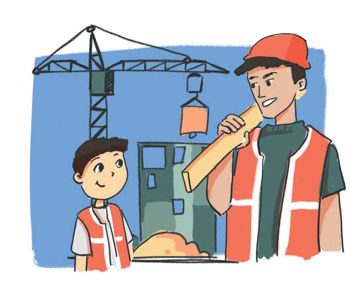

TEMATIKA 4: NJOHJA E RREZIQEVE
4.KUJDES, KËTU PUNOHET!

Babai i Diellit është ndërtues. Ai ka ndërtuar ndërtesa shumë të larta. Madje ai i ka treguar Diellit se që nga lart, makinat në rrugë duken si milingona. Dielli iu lut që një ditë ta merrte me vete te puna e tij, por babai i tha se atje ka mjedise të rrezikshme për fëmijë, si: mure të larta pa mbrojtje, gropa të mëdha, mjete të mprehta, pluhur, zhurma e shumë rreziqe të tjera.